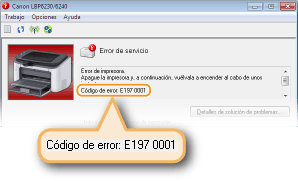

0KXF-03F
En la Ventana Estado de la impresora aparece un mensaje de error si se produce algún problema con el proceso de impresión, si el equipo no puede comunicarse o si algún otro problema impide un funcionamiento normal. Para obtener más información sobre los mensajes de error, consulte la siguiente lista.
No se puede comunicar con la impresora
La comunicación bidireccional no está activada.
Active la comunicación bidireccional y reinicie el ordenador.
Comprobación de la comunicación bidireccional
Comprobación de la comunicación bidireccional
En un entorno de conexión de terminal, el equipo es redireccionado y un problema de configuración impide la comunicación.
Si el equipo ha sido redireccionado en un entorno de conexión de terminal como, por ejemplo, una aplicación de escritorio remoto o XenAPP (MetaFrame), puede existir un problema con el firewall o con otra configuración que impide la comunicación con el equipo. Compruebe la configuración de la comunicación del servidor y del cliente. Para obtener más información, pónganse en contacto con el administrador de su red.
No se puede comunicar con el servidor
Su ordenador no está conectado con el servidor de impresión.
Conecte correctamente su ordenador con el servidor de impresión.
El servidor de impresión no se está ejecutando.
Inicie el servidor de impresión.
El equipo no está compartido.
Configure las opciones adecuadas para compartir impresora.
Guía de instalación del controlador de impresora
Guía de instalación del controlador de impresora
Carece de derechos de usuario para conectarse con el servidor de impresión.
Solicite al administrador del servidor de impresión que cambie derechos de usuario.
[Detección de redes] no está activada. (Windows Vista/7/8/Server 2008/Server 2012)
Active [Detección de redes].
Activación de [Detección de redes]
Activación de [Detección de redes]
Comprobar papel
El tamaño de papel que se ha establecido en el controlador de impresora es distinto del tamaño de papel del último trabajo de impresión.
Si intenta imprimir con el equipo después de cambiar la opción de tamaño de papel, este mensaje aparecerá para solicitarle que compruebe el tamaño de papel. Compruebe el tamaño de papel que está cargado en la bandeja multiuso o en la ranura de alimentación manual.
Cuando el tamaño de papel especificado en el controlador de impresora coincide, o cuando desea imprimir utilizando el papel que hay cargado ahora
Sin cargar papel nuevo, pulse la tecla  (Papel) o haga clic en en la Ventana Estado de la impresora.
(Papel) o haga clic en en la Ventana Estado de la impresora.
(Papel) o haga clic en en la Ventana Estado de la impresora. Cuando el tamaño de papel especificado en el controlador de impresora no coincide
Cargue el papel del tamaño especificado y pulse la tecla (Papel) en el equipo.
Carga de papel en la bandeja multiuso
Carga de papel en la ranura de alimentación manual
(Papel) en el equipo. Carga de papel en la bandeja multiuso
Carga de papel en la ranura de alimentación manual
Comprobar resultado impreso
El tamaño de papel que se ha especificado en el controlador de impresora es distinto al tamaño de papel que está cargado.
Cargue el papel del tamaño especificado y pulse la tecla (Papel) en el equipo.
Carga de papel en la bandeja multiuso
Carga de papel en la ranura de alimentación manual
(Papel) en el equipo. Carga de papel en la bandeja multiuso
Carga de papel en la ranura de alimentación manual
El trabajo podría no imprimirse con normalidad.
Si está imprimiendo a una cara, puede hacer clic en para seguir imprimiendo. Si continúa imprimiendo, pero los resultados no son satisfactorios, vuelva a imprimir el trabajo.
Si está imprimiendo a doble cara, detenga la impresión y vuelva a imprimir el trabajo.
Cancelación de trabajos de impresión
Cancelación de trabajos de impresión
Comprobar impresora
No se ha colocado el cartucho de tóner.
Coloque el cartucho de tóner correctamente.
Cómo sustituir los cartuchos de tóner
Cómo sustituir los cartuchos de tóner
En el interior del equipo queda papel de un atasco anterior.
Haga una inspección exhaustiva buscando fragmentos de papel en el interior del equipo. Si encuentra alguno, sáquelo. Si resulta difícil extraer el papel, no intente sacarlo del equipo a la fuerza. Siga las instrucciones del manual sobre cómo extraer el papel.
Eliminación de atascos de papel
Eliminación de atascos de papel
Error de comunicación
El equipo no está conectado con un cable USB.
Conecte el equipo a su ordenador con un cable USB.
Guía de instalación del controlador de impresora
Guía de instalación del controlador de impresora
El equipo no está encendido.
El indicador  (Alimentación) no se ilumina si el equipo no está encendido. Enciéndalo. Si el equipo no responde cuando se pulsa el interruptor de alimentación, compruebe que el cable de alimentación está bien conectado e intente encenderlo de nuevo.
(Alimentación) no se ilumina si el equipo no está encendido. Enciéndalo. Si el equipo no responde cuando se pulsa el interruptor de alimentación, compruebe que el cable de alimentación está bien conectado e intente encenderlo de nuevo.
Encendido del equipo
(Alimentación) no se ilumina si el equipo no está encendido. Enciéndalo. Si el equipo no responde cuando se pulsa el interruptor de alimentación, compruebe que el cable de alimentación está bien conectado e intente encenderlo de nuevo. Encendido del equipo
Impresora incompatible
Se ha conectado otra impresora aparte de este equipo.
Establezca la conexión adecuada entre su ordenador y el equipo.
Conexión a una red cableada
Conexión a una red inalámbrica
Conexión a una red cableada
Conexión a una red inalámbrica
 |
|
Si no sabe con certeza cómo establecer una conexión USB, consulte Guía de instalación del controlador de impresora.
|
Puerto incorrecto
El equipo está conectado a un puerto incompatible.
Compruebe el puerto.
Comprobación del puerto de impresora
Comprobación del puerto de impresora
|
|
|
Si el puerto que necesita no está disponible
Si utiliza una conexión de red, configure el puerto. Configuración de los puertos de la impresora
Si utiliza una conexión USB, vuelva a instalar el controlador de impresora. Guía de instalación del controlador de impresora
|
Memoria de impresora insuficiente
El documento que se está imprimiendo contiene una página con una gran cantidad de datos.
Este equipo no puede imprimir los datos. Haga clic en  para cancelar el trabajo de impresión.
para cancelar el trabajo de impresión.
para cancelar el trabajo de impresión. Error de comunicación de red
El equipo no está conectado a través de la red.
Realice la conexión de red adecuada entre su ordenador y el equipo.
Conexión a una red cableada
Conexión a una red inalámbrica
Conexión a una red cableada
Conexión a una red inalámbrica
El equipo no está encendido.
El indicador (Alimentación) no se ilumina si el equipo no está encendido. Enciéndalo. Si el equipo no responde cuando se pulsa el interruptor de alimentación, compruebe que el cable de alimentación está bien conectado e intente encenderlo de nuevo.
Encendido del equipo
(Alimentación) no se ilumina si el equipo no está encendido. Enciéndalo. Si el equipo no responde cuando se pulsa el interruptor de alimentación, compruebe que el cable de alimentación está bien conectado e intente encenderlo de nuevo. Encendido del equipo
La comunicación está restringida por un firewall.
Consulte el problema con el administrador del sistema del equipo.
Restricción de la comunicación utilizando firewalls
Restricción de la comunicación utilizando firewalls
Si no puede acceder al equipo porque la configuración es incorrecta, utilice el botón de restauración para inicializar las opciones de administración del sistema.
Inicialización mediante el botón de restauración
Inicialización mediante el botón de restauración
Falta papel o no se pudo alimentar el papel
No queda papel en la bandeja multiuso o en la ranura de alimentación manual. O no se ha podido alimentar el papel.
Coloque el papel correctamente y, a continuación, pulse la tecla (Papel) en el equipo.
Carga de papel en la bandeja multiuso
Carga de papel en la ranura de alimentación manual
(Papel) en el equipo. Carga de papel en la bandeja multiuso
Carga de papel en la ranura de alimentación manual
Atasco de papel en el interior de la impresora
Hay un atasco de papel en el interior de la impresora.
No intente sacar el papel atascado del equipo a la fuerza. Siga las instrucciones del manual sobre cómo extraer el papel.
Eliminación de atascos de papel
Eliminación de atascos de papel
Error de servicio
Se ha producido un error en el interior del equipo.
Apague el equipo, espere al menos 10 segundos y vuelva a encenderlo. Si no vuelve a aparecer el mensaje, puede continuar utilizando el equipo.
Si vuelve a aparecer el mismo mensaje después de encenderlo de nuevo, desconéctelo, desenchufe la clavija de toma de corriente del receptáculo de alimentación de CA y póngase en contacto con su distribuidor de Canon local autorizado. Tome nota del código de error que aparece y téngalo a mano cuando se ponga en contacto con su distribuidor de Canon local autorizado.

Tapa superior abierta
La tapa superior no está completamente cerrada.
Cierre bien la tapa superior.

|
|
|
Si la tapa superior no se cierra por completo, compruebe que el cartucho de tóner está bien introducido hasta el fondo.
|